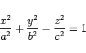
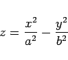
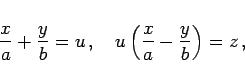
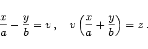

Inhalt Index DeskTop Bronstein

 Geometrie Vektoralgebra und analytische Geometrie Analytische Geometrie des Raumes Flächen 2. Ordnung, Gleichungen in Normalform
Geometrie Vektoralgebra und analytische Geometrie Analytische Geometrie des Raumes Flächen 2. Ordnung, Gleichungen in Normalform


Geradlinige Erzeugende einer Fläche sind Geraden, die ganz in dieser Fläche liegen. Beispiele sind die Erzeugenden der Kegel- und der Zylinderfläche.
|  | (3.439) |
besitzt zwei Scharen geradliniger Erzeugender mit den Gleichungen

|  | (3.441) |
besitzt ebenfalls zwei Scharen von Erzeugenden mit den Gleichungen
|  | (3.442a) |
|  | (3.442b) |
Wieder sind u und v beliebige Größen. In beiden Fällen gehen durch jeden Flächenpunkt zwei Geraden, und zwar von jeder Schar je eine Erzeugende. In den beiden Abbildungen ist jeweils nur eine Geradenschar eingezeichnet.